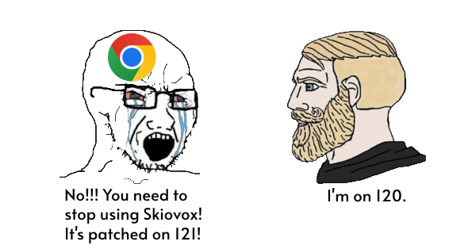

It's February 26, 2024. Bypassi posted exactly 300 days ago about his
discovery of LTMEAT. I haven't gotten a chance to use it, though. Chess
move? Nah. I got a chance to use it in Skiovox, and it's been many days
since. Skiovox is ancient, and I'm starting to think worrisome of
Bypassi. Sundar is likely headed to sniff like a dog, which is probably
the right thing to do. Bypassi's desired username is already taken by
some random guy, and don't say people don't know what his actual
username is. It's bypassiwastaken, and Sundar already spent his life
trying to hunt down famous Discord people, like Aka-But-Nice, Nebelung,
and Bypassi. But, believe it or not, time is running down the drain for
Skiovox.

There has been a big advantage in kiosk exploits because you don't only
have access to public web URLS, but furthermore, private low-level
Chrome URLS like famously chrome://kill and chrome://hang, but also
chrome://crash. This is especially great for extensibility, like you
might want to install an extension like Tampermonkey or uBlock Origin.
But the only problem is, these exploits are seen as the most patchable.
There is a rise of sign-in screen exploits that you may want to try.
Uh, I'm sorry?
Hell yeah!
Brandon421-ops originally posted in his deleted Exploits-And-Hacks repo
that you can have an unblocked browser window on the sign-in screen via
the ChromeOS webview. This is especially nice when you make helpers to
make the browsing experience as smooth as possible.
Sources
SWAB
Baghdad